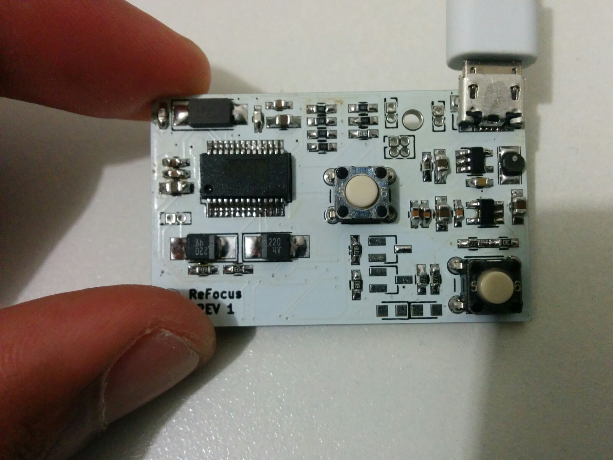

ReFocus
Project ReFocus was a project that I started to help and assist vision impaired people. The original idea came to me when I was approached by a member from NZ Blind Foundation for a donation. I was quite surprised to find out how expensive and unaffordable it is to be blind. I searched around the internet to find equipments that can help blind and vision impaired people. To my surprise most of these technologies are either too expensive and/or just plain impractical. So I set out to design and manufacture my own device to help blind people. With some people I talked to I came to a conclusion that being dependent on someone else is one of the worst part of it. The original idea was to design and manufacture a device that will help blind or vision impaired person to help read and to navigate around. I decided to make a wearable glasses that will fit onto any glasses.
The first objective of this project was to create a program that is able to read aloud any word that the user is pointing towards. In the first months of the development I did a lot of proof of concept and quick prototypes to prove that such devices are possible to make. I realised that the making devices such as image recognition requires a lot of computing power even likes of Google uses intensive online servers to do image recognition. But I was able to run my program on a small/pocket computer by using some algorithms and dissective recognition methods. Even though this method was not perfect but it was a great start.
The next big step was to design a casing to hold all of the components. I decided to use an intel edison for the first prototype. One of the requirement to the project was that the actual device should be easy to remove and easy to reattach so it can be multipurpose. The device can be used in two different ways, when the device is in the reading mode the onboard camera will recognise any word that the user is pointing at and translate it into speech using the bone conduction speaker inside. When the device is in the navigation mode onboard ultrasonic will tell the user how far an object is(eg wall) through either the speaker or with the help of haptic feedback. With a little bit of training I think this can be used as a virtual cane, one that is lightweight, portable and one that is much more accurate.